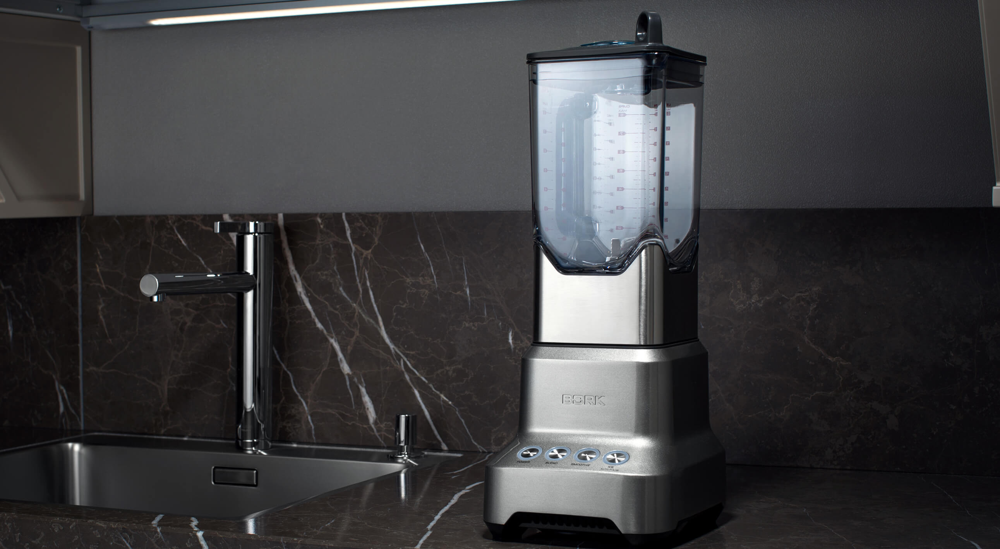

Блендер BORK B800
Технические характеристики

Мощность: 2000 Вт Объем кувшина: 2 л
Количество скоростей: 1
Количество режимов: 3
Габариты (ДxШxВ): 20x17x47 см Вес: 5 кг
Длина электрического кабеля: 1 м
Материал кувшина: поликарбонат
Материал корпуса: металлический корпус
Срок гарантии: 1 года
Стана производитель: Китай
Аргументы для продажи
Низкий уровень шума
KINETIX: блок профессиональных ножей Легкая вместительная чаша 2 л
Оригинальная конструкция чаши
Blend: тщательное перемешивание продуктов
Smoothies: приготовление десертов "смузи"
Ice\Auto Pulse: дробления и измельчения Ножи из прочной легированной стали
Подсветка панели управления
Автоматическая защита от перегрузки
Удобное хранение сетевого шнура